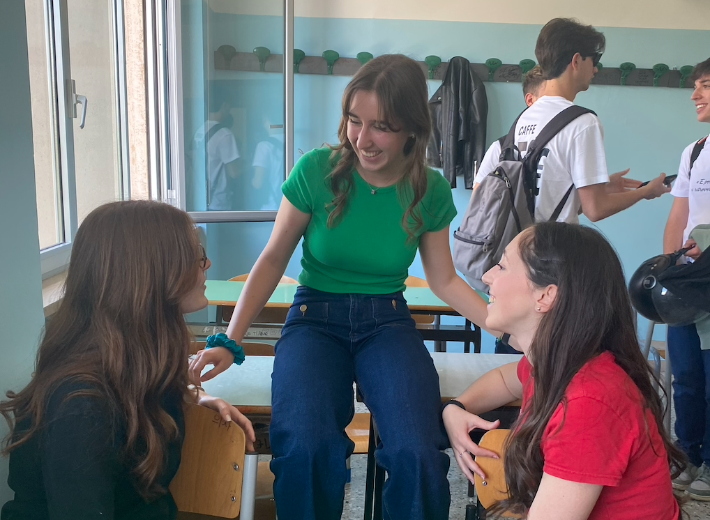
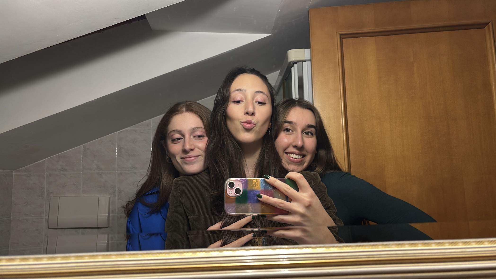
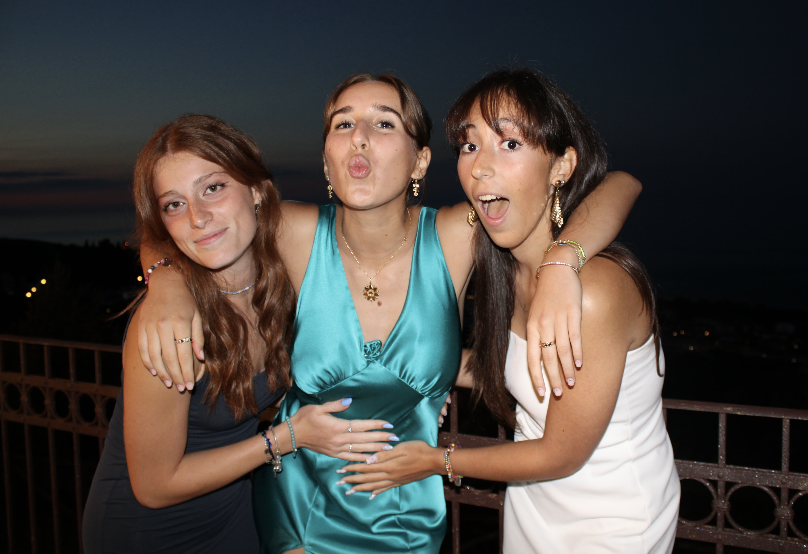
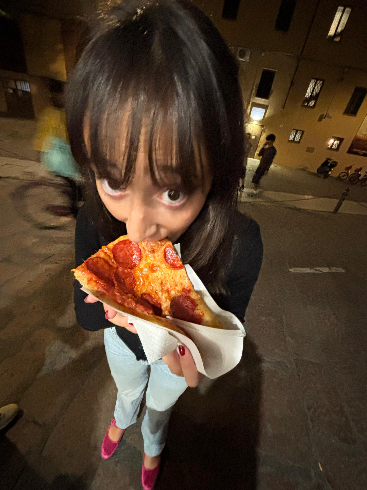
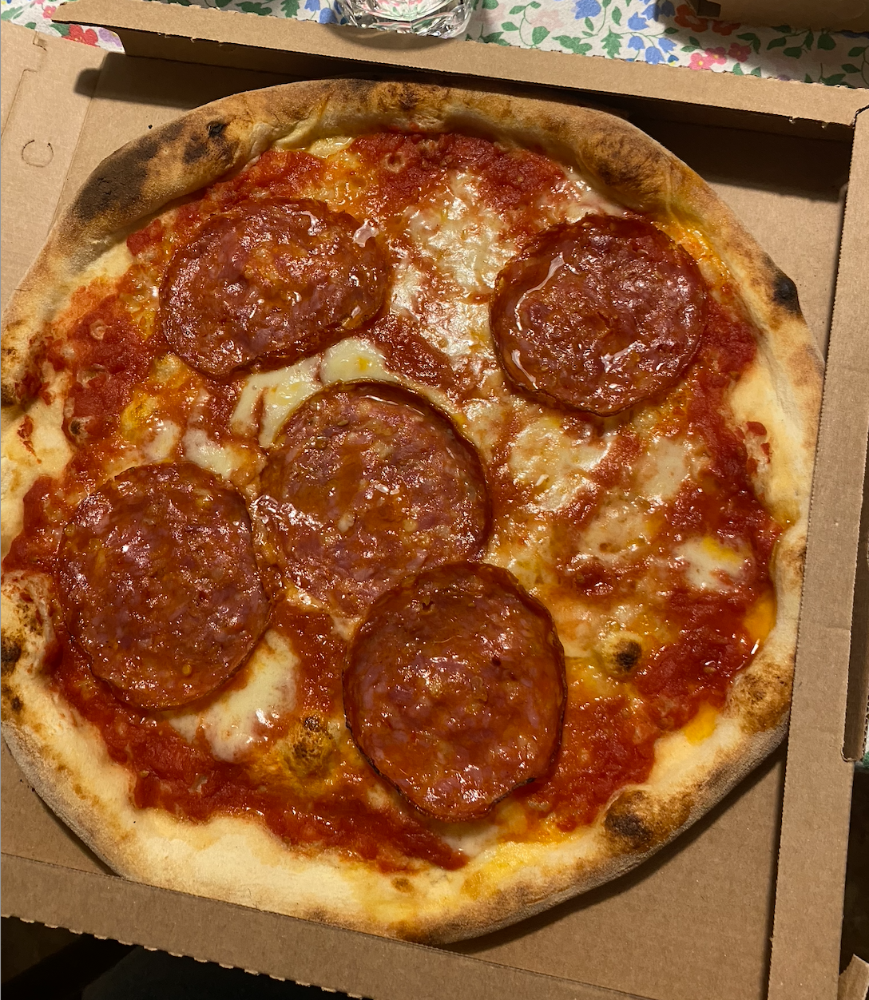
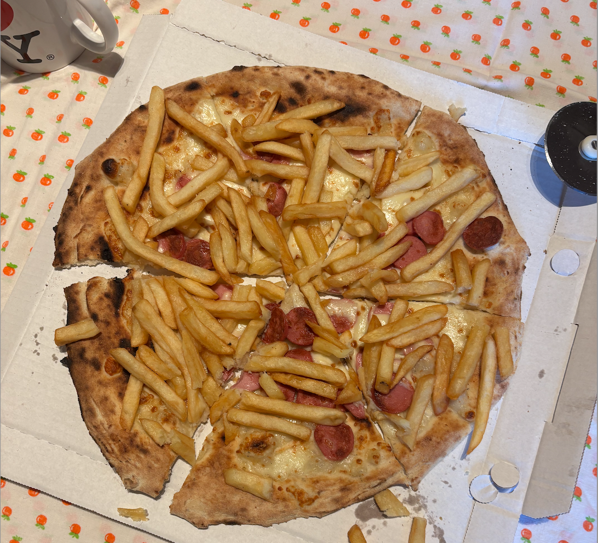
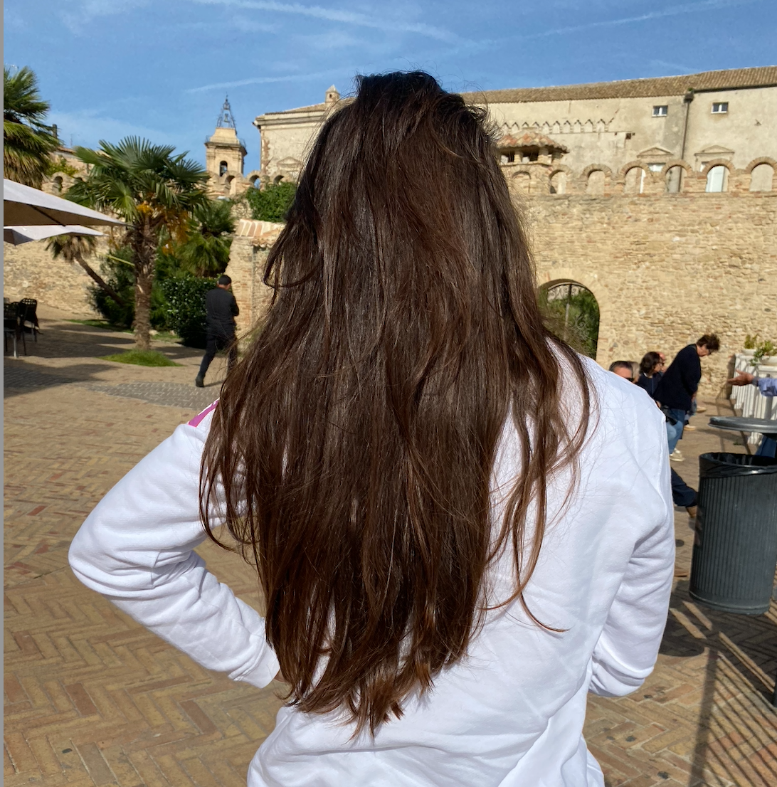
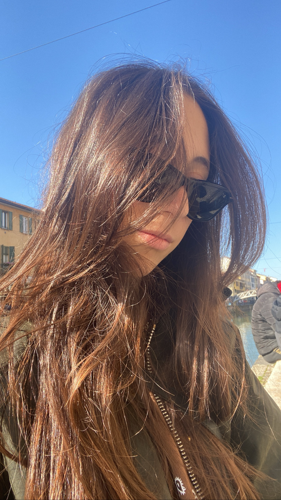
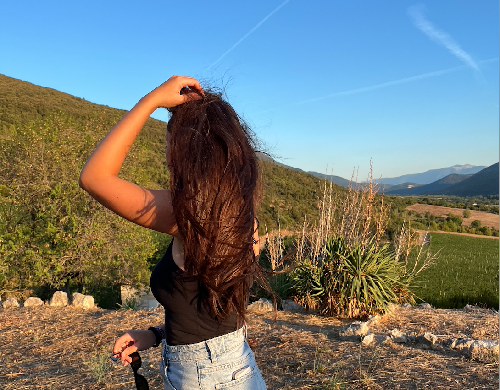
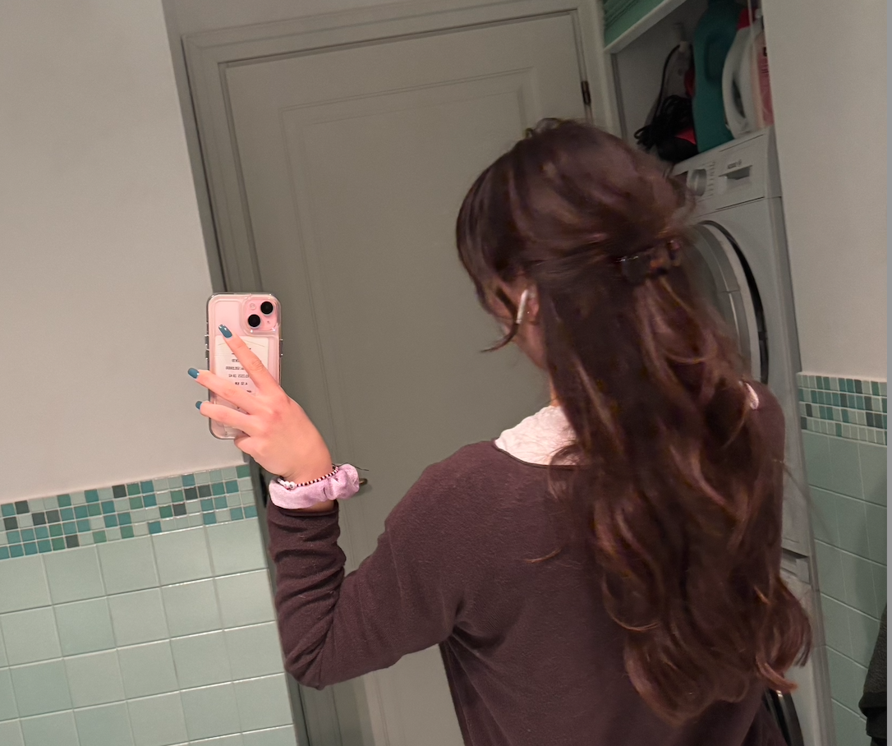

Introduzione alle teorie
Queste teorie sono nate dall'esigenza di codificare e razionalizzare
delle semplici quotidiane esperienze umane
Teoria del gossip 🗣️
Questa teoria è nata dalla necessità di trattare in maniera rigorosa un argomento troppo caotico a volte, quindi ecco a voi una vera e propria guida al gossip !!!
Classificazione Juicy 🍑 da 1 a 5:
1- not juicy
5- VERY juicy
I livelli juicy si applicano a tutti e tre i tipi di gossip.
I TRE TIPI DI GOSSIP:
- Gossip teoria 💭
- Gossip “rumors” 🗣️👤
- Gossip verificato ✅
Gossip teoria:
Costruzione di una teoria più o meno elaborata basata su pensieri oppure fatti. La teoria basata su pensieri è il gossip meno accurato perché prodotto interamente dal gossippatore(GSP). La teoria basata su fatti è invece un gossip “interpretato” cioè creato dal GSP su basi più o meno solide in base al contesto e al comportamento della persona soggetto del gossip.
Gossip “rumors”:
Il gossip “per sentito dire” è un gossip più accurato e verificato della teoria ma allo stesso tempo non ancora certo. La veridicità del gossip “rumor” si basa su due principali fattori:
- affidabilità della fonte
- credibilità del fatto
La fonte può essere considerata affidabile se presenta almeno 2 di queste 4 caratteristiche:
- ha precedentemente offerto gossip succosi e verificati
- è un maschio (senza un passato da GSP)
- è restia alla divulgazione dell’informazione
- non è in diretto e stretto contatto con il soggetto del gossip (a meno che si parli di se stessi)
La credibilità del fatto è da giudicare in base alla conoscenza del contesto e delle persone coinvolte (a discrezione del GSP)
Gossip verificato:
È un gossip certo e verosimile. I GSP per catalogare un gossip come “verificato” devono necessariamente (il passaggio è imprescindibile) accertare che sia avvenuta almeno una delle seguenti situazioni:
- testimonianza visiva o uditiva di uno dei GSP
- confessione diretta del soggetto del gossip
- Prova fisica o telematica a supporto del gossip stesso
- Osservazioni dirette e sistematiche del soggetto del gossip, interpretate e analizzate in un ampio contesto dai GSP
📝 NOTA BENE: il gossip si può evolvere dallo stato di teoria allo stato di verificato. Il passaggio è unico e irreversibile. Il passaggio da “verificato” verso i gossip meno attendibili è impossibile.
CODICE - come annunciare un gossip
- Juicy 🍑 (da 1 a 5)
- Classificazione 📝 (teoria, rumor, verificato)
- Urgenza 🚨 (da A a C)
| Classificazione | Nome in Codice 🥪 |
|---|---|
| Teoria | Nutella 🍫 |
| Rumor | Cotto e Sottiletta 🥪 |
| Verificata | Crudo e Squaquerone 🧀 |



Ringrazamento alle mie amiche per il supporto a questa teoria
Teoria della Pizza 🍕
Le fasi di una cena a base di pizza secondo Antonia:
Fase 1: l’entusiasmo
Appena ordinata la pizza(oppure appena deciso di cenare con la pizza) c’è l’eccitazione per la magnifica decisione.
Fase 2: taste the flavor
La pizza arriva e dopo l’estenuante attesa si GODE per il sapore della pizza tanto bramata.
Fase 3: i primi ripensamenti
A metà della pizza iniziano a salire i primi rimorsi. Sorgono i primi dubbi: riuscirò a finirla? Perché ho preso questa se l’altra era più leggera?
Fase 4: il pentimento
Arriva così la fase del pentimento, la verità è che quella pizza non la volevi e l’hai presa solo per il gusto di “mangiare la pizza”. Non riesci a finirla. Il soggetto si promette di non mangiare più pizza in tutta la sua vita. (ALLERTA SPOILER: 🎶ci son cascato di nuovo🎶)
Fase 5: la resa
A 3/4 di pizza il soggetto si arrende gonfio di carboidrati e colmo di promesse per il futuro. È triste buttare ciò che resta oppure vedere qualcun altro che lo mangia.
Fase 6: il piano pizza
Si costruisce un elaborato “piano pizza” che dovrebbe far riflettere sul vero senso di prendere quella pizza che ci lascia pieni di dispiaceri.
Fase 7: il loop
Il soggetto come un perfetto coglione ripete le fasi periodicamente ogni settimana.




Teoria delle storie Instagram
scrivi roba
Classificazione pizzaaaa
Teoria della termoregolazione in doccia 🚿
Scopo: approcciare in modo corretto alla temperatura esterna alla doccia per non soffrire in freddo.
Premesse:
- Acqua calda
- Esterno freddo
Fase 1: interrompiamo il flusso d’acqua per abituarci al clima interno alla doccia (con vapore caldo)
Fase 2:apriamo leggermente la porta della doccia per far entrare parte dell’aria fredda esterna alla doccia
Fase 3:usciamo dalla doccia termoregolati correttamente.
Teoria della dei capelli sporchi 💇🏻♀️
I tipi di capelli sporchi secondo Antonia:
- Capelli sporchi da sudore
- Capelli sporchi da “me li tocco perché sono puliti ma poi li sporco”
- Capelli sporchi da “non me li lavo da 3 settimane”
- Capelli sporchi da “ho tenuto i capelli legati da 3 giorni”
Assorbimento dell’acqua dai vari tipi di capelli sporchi:
- Capelli molto sporchi - veloce assorbimento di acqua in doccia (i capelli già pieni di olio sono al 50% già bagnati)
- Capelli mediamente sporchi - LENTO assorbimento di acqua in doccia
- Capelli puliti - veloce assorbimento di acqua in doccia.
Routine in doccia:
- Bagnare i capelli
- Shampoo
- Risciacquo
- Balsamo
- Mentre il balsamo è in posa (capelli più lisci e morbidi) bagnoschiuma
- Risciacquo
- Strizzare capelli



